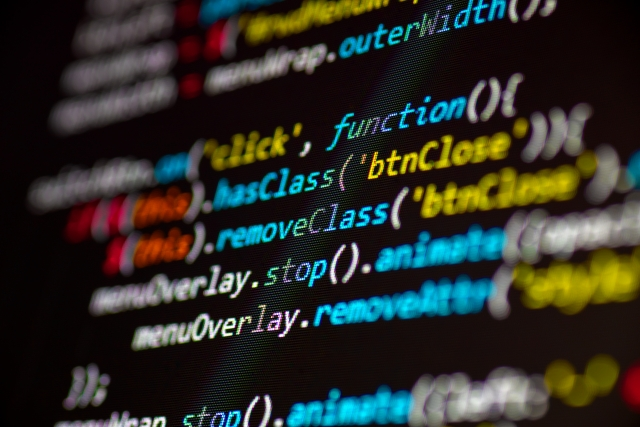

プログラミング入門編～基礎知識～
はじめに
このサイトを見ている皆さんこんにちは！
今回はプログラミングの基本的な要素を初心者でも分かりやすいように丁寧に解説していきます。ぜひ最後まで読んでみてください。
目次
1.プログラミングとは？
このサイトにたどり着いている人のほとんどはプログラミングという言葉を知っていると思います。ですが、具体的に何をするものなのかまでは知らないのではないでしょうか。

基本の要素を知る前に、まずはプログラミングそのものの意味を学んでいきましょう。
ズバリッ！プログラミングとは、コンピュータに
「何を」「どの順番で」「どう動かすか」を指示するための
手順(プログラム)を作ることです。
人間が普段使っている言語はコンピュータにはわからないので、プログラムを作るときには、コンピュータ側が使っている言語を使って指示します。
2.初めての人におすすめの言語
コンピュータに指示するために使う言語にはいろいろな種類があり、それぞれに得意分野があります。プログラミングで何を作りたいかが決まっていれば目的に合った言語を選ぶと効率的に作りたいものを作ることができます。
ですが、最初から作りたいものが決まっている人は少ないと思うので、どの言語でどんなものが作れるのかを簡単にリストにしました。
これを参考にして自分の一番やりたいことは何か考え、自分に合うと思う言語について軽く調べてみましょう。
ウェブサイトを作りたい方におすすめ
- HTML
- インターネット上にあるウェブサイトの骨組み,構造を作るのに使われている言語です。(このサイトも主にこの言語で構築されています)
HTMLは、サイトの文章を「タグ」と呼ばれる記号で囲むことで、コンピュータやブラウザにその部分の役割(見出し,段落など)を伝えることができます。
- CSS
- インターネット上にあるウェブサイトのレイアウト,デザインを装飾するのに使われている言語で、HTMLと併用されることが多いです。
プログラムを「どこを(セレクタ)」「何を(プロパティ)」「どう変えるか(値)」の順番で書くルールがあり、CSSを使うことでより魅力的なウェブサイトを作ることができます。
- JavaScript
- インターネット上にあるウェブサイトに動きを付けるのに使われている言語です。
主にブラウザ上で動作し、メニューの開閉やポップアップの表示など、ユーザーの特定の操作に応じた表示変更を加えることができます。
ゲームを作りたい方におすすめ
- Python
- ゲーム制作のほか、AI開発や業務の自動化などにも使われている言語です。
文法が英語に近いため、プログラムがほかの言語よりも比較的読みやすく、便利な機能がまとまった「ライブラリ(拡張機能)」を使えば複雑なプログラムを書かなくても高度な処理を実装することができます。
- C#
- Unity(ゲーム制作ソフト)でスマホゲームからPCゲームまで幅広いゲーム制作に使われている中心言語です。
プログラムを作るために必要な最初の環境構築がしやすいため、初心者でもプログラム作成から実行まで進めやすいです。
- JavaScript
- 上記のようなウェブサイト制作だけでなく、ブラウザゲームも作ることができる言語です。
ブラウザ上で動く2Dゲームやミニゲームを手軽に作ることができ、作ったものもすぐ共有しやすいです。
3.さいごに
プログラミングを学ぶことにおいて大切なのは、自分から積極的に学びにいく行動力と向上心です。
完璧じゃなくてもいいので、まずは自分でウェブサイトやゲームなど自分の作りたいものを作ってみましょう。
きっとそれが目的実現のためのとても大きな1歩となります。このサイトがその歩みの支えになれば幸いです。